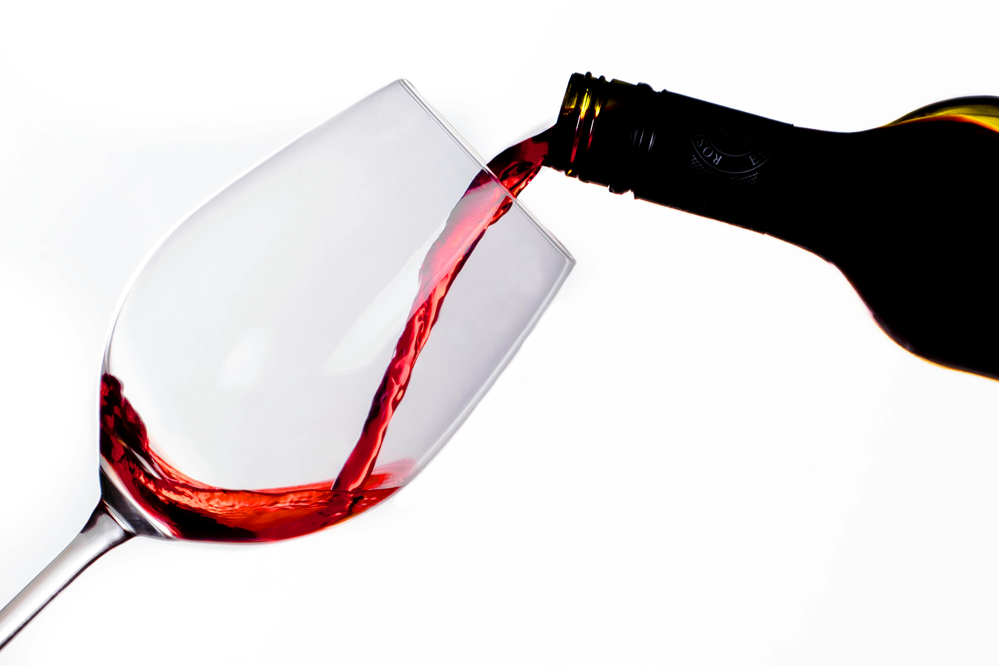
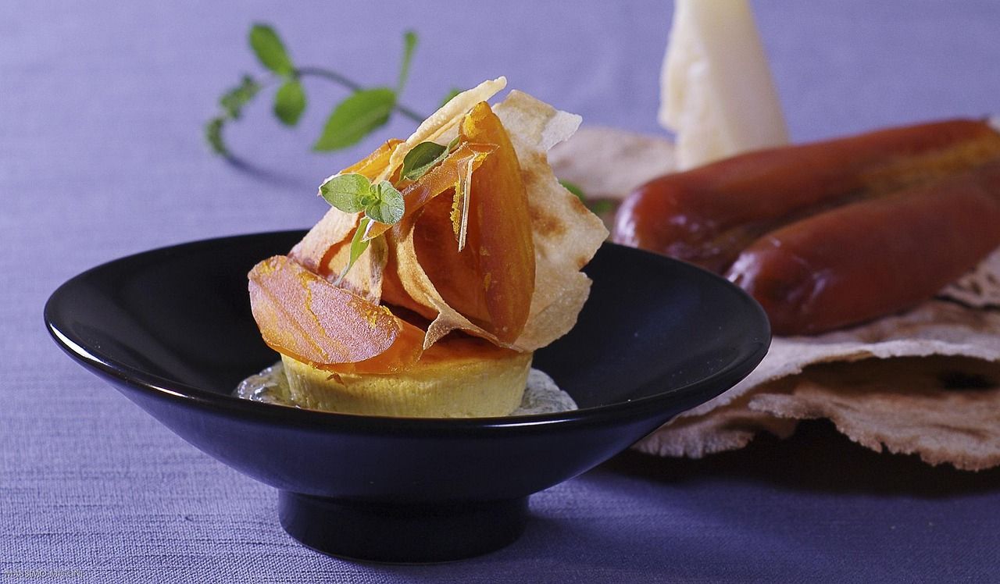

江別の赤レンガで出会う、
スペインの風と北海道の大地。
Spanish Wine & Karasumi MARCOMAR
News
- 2026.02.08 【新入荷】余市から希少なピノ・ノワールが届きました。
- 2026.02.01 今月の「カラスミ」入荷状況について
Concept
「ワインとカラスミのマリアージュ」
それがMARCOMARの提案する新しい体験です。
情熱の国スペインのワインと、海の宝石カラスミ。
そして、私たちが拠点を置く北海道のテロワールを感じる道産ワイン。
元料理人の視点で選んだ、
食卓を彩る最高の一本をお届けします。
Our Specialties

Spanish Wine
太陽をたっぷり浴びた
濃厚な赤と爽やかな白

Karasumi
ワイン泥棒な珍味
自家製カラスミとのペアリング

Hokkaido Wine
今、世界が注目する
北海道・余市などの厳選ワイン
New Arrivals on Instagram
最新の入荷ワインや、カラスミの仕込み状況は
インスタグラムで毎日更新中！


Partner Wineries
北海道の風土を醸す、信頼の生産者たち
- TAKIZAWA WINERY
（三笠） - 宝水ワイナリー
（岩見沢） - さっぽろ藤野ワイナリー
（札幌）
Shop List & Access
WINE SHOP MARCOMAR
（北海道・江別 EBRI店）
〒069-0821 北海道江別市東野幌町3-3 EBRI内
JR野幌駅から徒歩5分 / 駐車場あり
OPEN 10:00 - 19:00
MARCOMAR JAPON
（東京・狛江店）
〒201-0014 東京都狛江市東和泉3丁目6-13
小田急線 和泉多摩川駅から徒歩2分
Tel: 090-1117-3209
※営業日はInstagramをご確認ください